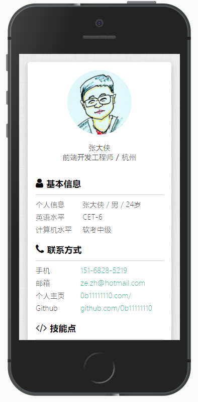

个人简历模板
Intro
此简历模板：
- 内容上，来源于我本人真实求职经历以及参加多次网上简历培训总结而成
- 风格上，参考众多简历风格，@DIYgod，@ekCit以及
我自己的博客主题 itsay.me
欢迎提issue或者star，ღ( ´･ᴗ･` )比心
Object
前端求职/程序员求职
Usage
- 先Star/Fork本项目，然后Clone或者直接下载到本地
- 修改index.html内相关信息
- 微调样式（作为前端求职，这点应该不成问题）
- 生成pdf(开发中)
- 部署到线上
- 生成访问二维码（开发中）
- 祝您求职成功！
Preview
PC端

移动端

TODO
- 左栏固定（切换）
- 输出pdf功能
- 可编辑
ChangeLog
- 2017.3.7 创建模板
- 2017.3.12 移动端优化
- 2017.12.20 修改部分内容
- 2018.6.20 新增左栏固定功能（切换）
Acknowledgments
- font-awesome提供字体图标
LICENSE
MIT © ITSAY